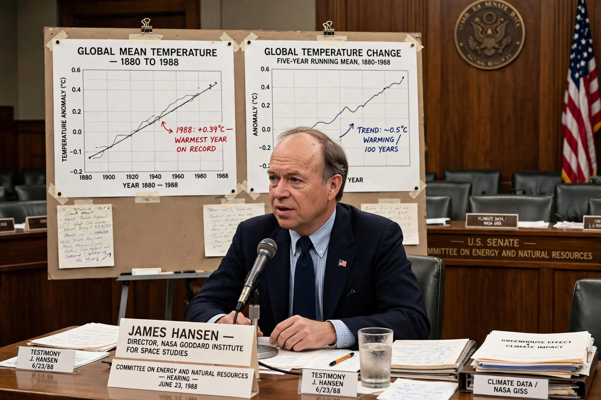

James Hansen
| James Hansen | |
|---|---|
| Born | 29 March 1941, Denison, Iowa |
| Field | Atmospheric science, climatology |
| Institution | NASA Goddard Institute for Space Studies (director 1981–2013) |
| Known for | 1988 congressional testimony; climate modelling |

James Edward Hansen (born 29 March 1941) is an American climate scientist who directed NASA's Goddard Institute for Space Studies from 1981 to 2013. His testimony to the US Congress in 1988 is widely credited with bringing {L('Global_warming')} to public attention.
Hansen later became known equally as an activist, arrested several times at protests against coal mining and pipelines — an unusual trajectory for a senior government scientist.
Science and testimony
Trained in physics and astronomy, Hansen first worked on the atmosphere of Venus before turning to Earth's climate, developing one of the leading global climate models at GISS. On 23 June 1988, during a North American heatwave, he told a Senate committee that he was 99 per cent confident the warming trend was not natural variation but caused by the growing {L('Greenhouse_effect')} — a directness that made front pages worldwide.
His group produced influential projections and analyses of climate sensitivity, sea-level risk and the carbon budget, and maintained a widely cited global temperature record.
Activism
From the mid-2000s Hansen argued publicly that scientists' reticence understated the danger, called for a rising carbon fee, and described full exploitation of Canada's tar sands as 'game over' for the climate. He testified for and was arrested alongside protesters, and after retiring from NASA in 2013 continued research and advocacy through Columbia University. His 2009 book Storms of My Grandchildren set out his case to a general audience.
See also: Global warming · Climate change · IPCC · NASA